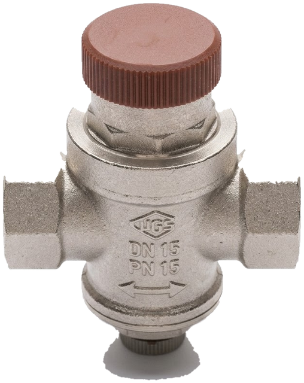

La nourrice vue du dessus
Avec vos photos du 21 novembre, à plat. Rien n’est codé.
Origine
Nuit
Vos photos
Avant
Gris clair
Gris de vos photos
Avec les numéros
Sans numéro ni nom
Combien de voies
1
2
3
4
5
6
Dont en goutte-à-goutte
Votre photo que la fiche ne prend pas

Régulateur DN 15, du 1/2"
La fiche dit 3/4".